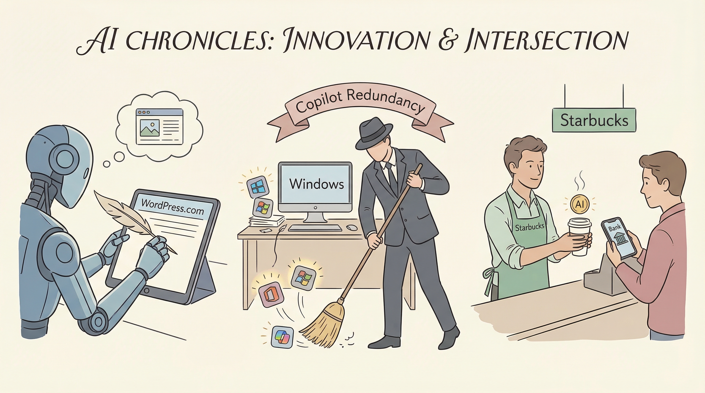

WordPress.com新增AI功能，允许AI代理撰写、发布和管理网站内容。
两克伴AIGC日报
2026-03-21 星期六

本期关注：WordPress.com 允许AI代理撰写、发布和管理您的网站。、微软撤销了其在Windows上的一些Copilot AI冗余功能、星巴克推出了一款真正能做事的人工智能银行助手、在Nvidia GTC大会上发生了什么：NemoClaw、机器人Olaf和一场价值1万亿美元的赌注
📰 行业动态
微软缩减Windows上Copilot AI的入口点，从照片、小部件、记事本等应用开始。
英国挑战性银行Starling推出AI银行助手，提供实际服务。
英伟达GTC大会上，黄仁勋预测到2027年AI芯片销售额将达1万亿美元。
Eightco向OpenAI追加投资4000万美元，总投资额达9000万美元。
🔥 今日焦点
WordPress.com近日推出全新AI代理功能，允许AI自动撰写和发布文章，此举有望降低内容发布的门槛，同时推动网络中机器生成内容的增长。这一创新举措的核心在于，通过AI代理的辅助，用户可以更轻松地创作和发布内容，从而打破传统内容创作的壁垒。这一变化对AI领域具有重要意义，不仅展示了AI在内容创作领域的应用潜力，也为AI技术在互联网内容生态中的角色提供了新的可能性。WordPress.com的AI代理功能有望推动AI技术在内容创作领域的进一步发展，为用户带来更加便捷、高效的内容创作体验。
---
在Anthropic与五角大楼的争议背景下，Reddit用户u/facethef通过其构建的AI Roundtable工具，对Grok 4.1、GPT-5.4、Kimi K2.5、Claude Opus 4.6、Gemini 3.1 Pro和GLM-5等六款AI模型进行了调查，探讨AI公司是否应基于伦理立场拒绝军事合同。结果显示，所有模型一致投票支持AI公司有权拒绝此类合同。这一调查结果揭示了AI领域对军事合同伦理问题的关注，对AI公司而言，拒绝军事合同可能成为其未来决策的重要考量因素。同时，这一调查也引发了业界对AI伦理的深入思考，对推动AI行业的健康发展具有重要意义。
📚 深度长文
本文深入探讨了Dreamer：个人代理操作系统（Personal Agent OS）的愿景与实现路径。作者David Singleton揭示了其背后的核心观点：通过构建一个全新的操作系统，实现个人智能代理的全面赋能。文章以$10,000奖金激励新工具的开发，并为Latent Space订阅者提供特别通道，展示了其独特的创新精神。
关键论据包括：Dreamer旨在打破传统操作系统的局限，实现个人智能代理的自主学习和决策能力；通过引入新的工具和功能，提升个人工作效率和生活品质；同时，文章强调了Latent Space订阅者的重要地位，为读者提供了深入了解Dreamer的机会。
《The Download：OpenAI打造全自动研究员，发现迷幻药物试验盲点》一文由Thomas Macaulay撰写，深入探讨了OpenAI在人工智能领域的最新进展。文章核心观点是，OpenAI正致力于打造一个全自动的研究员，该系统基于人工智能技术，能够自主解决复杂问题。文章以OpenAI的全新挑战为切入点，详细阐述了这一项目的进展和潜在影响。
文章的关键论据包括：OpenAI正投入大量资源研发全自动研究员，这一系统有望在解决复杂问题方面发挥重要作用。此外，文章还揭示了迷幻药物试验中存在的盲点，为相关研究提供了新的视角。
📄 重点论文
**核心贡献**: 提出了一种基于自然语言和图形界面的无代码工作流程构建工具，允许非技术用户通过交互式笔记本风格进行开发，通过代码生成和错误恢复来调用代理，而不涉及编排或任务执行。
**与AI Agent的关联**: 为非技术用户提供了一种构建AI代理工作流程的新方法，降低了技术门槛，对AI Agent的普及和应用具有实际价值。
**核心贡献**: 提出了一种双过程记忆系统，旨在为长期推理提供高保真的记忆访问，解决了现有检索式记忆框架的增量处理范式问题。
**与AI Agent的关联**: 为LLM代理提供了更有效的记忆系统，有助于提高长期推理能力，对AI Agent的研究和应用有重要意义。
**核心贡献**: 提出了一种协调记忆周期的多智能体推理和就地自我进化方法，解决了现有系统中记忆构建、检索和利用作为孤立子程序的问题。
**与AI Agent的关联**: 为记忆增强型LLM代理提供了更有效的记忆管理策略，有助于提高智能体在长期交互中的表现，对AI Agent的研究和应用有重要价值。
🛠️ 产品推荐
Show HN: Agent Use Interface (AUI) 是一款轻量级、开放规范的AI应用接口，旨在让用户将个人AI代理带入任何应用程序。AUI简化了AI集成过程，特别适用于已采用URL参数驱动的简单应用。通过AUI，用户无需复杂配置，即可实现个人AI代理在应用中的便捷操作，提升用户体验。该产品为技术从业者提供了一种高效、便捷的AI集成解决方案。
---
OpenHarness是一款开源的TypeScript SDK，专为构建AI代理而设计。该产品基于Vercel的AI SDK 5，支持任何该SDK所支持的模型。核心功能包括从AGENTS.md文件加载代理指令、MCP服务器连接工具、子代理（代理委托给子代理）等。OpenHarness旨在解决现有AI代理SDK“重”和不可定制的问题，为开发者提供灵活、高效的AI代理构建解决方案。
---
Qwack是一款基于OpenCode的AI编码代理协同控制工具。该产品旨在解决AI代理使用过程中，多人协作时难以实时互动的问题。用户可通过Qwack实现多人实时共享编码环境，共同指导AI代理完成编码任务。核心功能包括：多人实时协作、共享编码环境、同步输出结果。Qwack的AI能力和创新点在于，它通过构建协同控制机制，有效提升了AI代理在复杂场景下的表现，为技术从业者提供了便捷的AI编码协作解决方案。